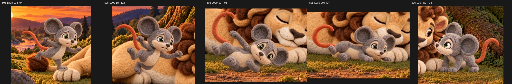

S05-L008-B01-I04 · owner_selected_scene_image

SHA-256 a7f5009ae8040b97239c5bed9a00544ef97e811eb75e7cd1970a038a896ab7e7
Native files linked. Landing size passed owner review. The exact landing PNG is now owner-selected for source-still depiction only; performance-pose, continuity and video review remain separate.

SHA-256 a7f5009ae8040b97239c5bed9a00544ef97e811eb75e7cd1970a038a896ab7e7

SHA-256 0d461578cc928c998c9e1803152c19f1eefcea46ba1a3e1e7690d574d167a6f1

SHA-256 271dc07c69958fb871951dd767cb0c59b9b63cd2bfa72c6f0484488fc46a3566

SHA-256 1212d2cb1d80628b2e6222e062e690aa443e169a8325c3e7212f85371d842c4f

SHA-256 bc914de64088c20665c254e5e7a84a96bfaf282cb0d12781c42e0a61ff964dfd